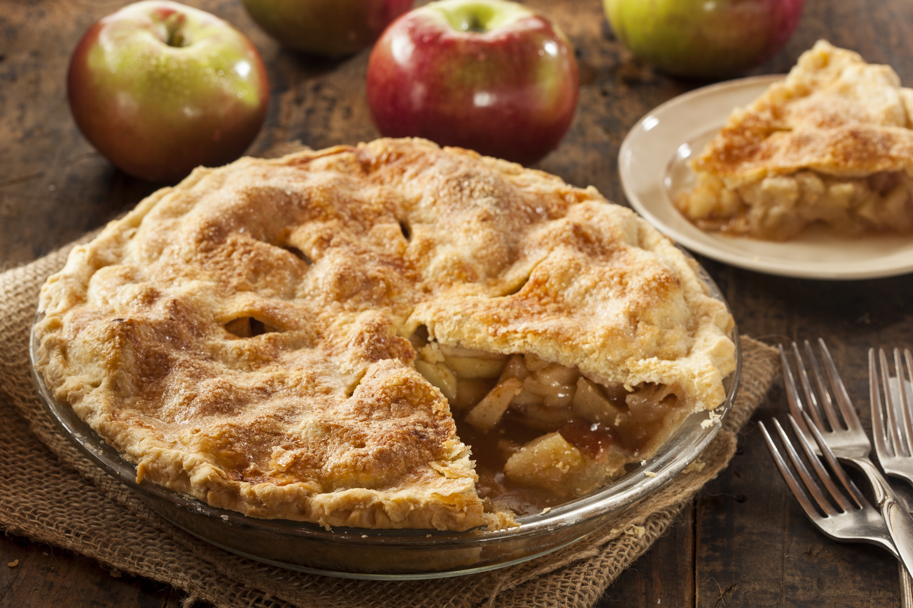

Apple Pie

Make the perfect apple pie crust every time! This delicious dessert is sure to be a favorite.
Ingredients
- 1 package premade Pie Crust.
- 6 cups thinly sliced Peeled Apples
- 3/4 cups Sugar
- 2 tablespoons All Purpose Flour
- 3/4 teaspoons Ground Cinnamon
- 1/4 teaspoon of Salt
- 1/8 teaspoon Ground Nutmeg
- 1 teaspoon Lemon Juice
Instructions
- Preheat oven to 425 F.
- Place pie crust in oven.
- Mix ingredients in seperate bowl and put into pie crust.
- Place bottom layer under top layer and seal edges together.
- Bake 40-45 minutes or until apples tender.
***ice cream is always a great addition for any pie***
***for both recipes, try adding your own spice to ensure it is to your taste, for example cinnamon***